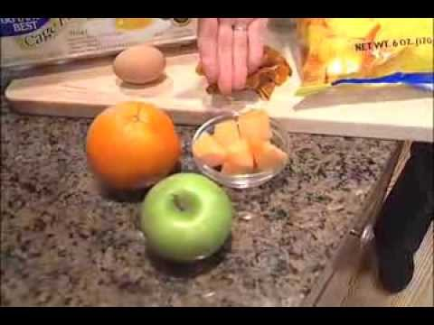

Please Wait... | Cloudflare
 Please enable cookies.Please wait
We are checking your browser www.realbuzz.com
Why do I have to complete a CAPTCHA?
Completing the CAPTCHA proves you are a human and gives you temporary access to the web property.
What can I do to prevent this in the future?
If you are on a personal connection, like at home, you can run an anti-virus scan on your device to make sure it is not infected with malware.
If you are at an office or shared network, you can ask the network administrator to run a scan across the network looking for misconfigured or infected devices.
Another way to prevent getting this page in the future is to use Privacy Pass. You may need to download version 2.0 now from the Chrome Web Store .
Cloudflare Ray ID: 662db9c5fa452774 • Your IP : 195.123.245.186 • Performance & security by Cloudflare